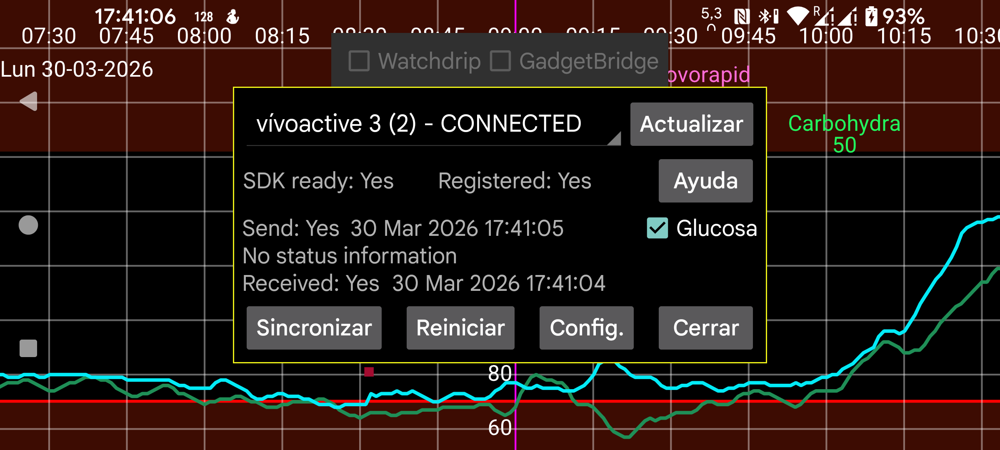

ar be de es fr hi it nl pl pt ru tr uk uz zh en
Kerfstok (https://www.juggluco.nl/Kerfstok/index.html) es una app de reloj para relojes deportivos Garmin programables. Desde Kerfstok 1.6.0 también puede usarse en relojes sin pantalla táctil. Kerfstok ofrece estas funciones:
Resolución de problemas:
Primero, el reloj debe mostrarse como conectado (CONNECTED) en la esquina superior izquierda.
Segundo, Kerfstok debe estar iniciado en el reloj.
Para recibir valores de glucosa, la opción Glucosa debe estar marcada.
Si todo va bien, en todas partes aparecerá Yes y verás fechas recientes junto a Send y Receive. El estado debe ser SUCCESS.
A veces la conexión entre el teléfono y el reloj se estropea. Si detrás de estado aparece no status information, normalmente ayuda hacer lo siguiente:
Si el estado mostrado es FAILURE_DURING_TRANSFER, a veces ayuda apagar y volver a encender Bluetooth y luego pulsar Reinit. Si eso no ayuda, normalmente hay que cerrar Kerfstok y reiniciar el reloj. Después hay que volver a iniciar Kerfstok y asegurarse de que aquí la opción Glucosa esté marcada. A veces solo funciona tras varios intentos, o también aparecen errores de no status information que deben resolverse del modo descrito antes. En casos raros hay que reiniciar el teléfono.
A veces aparece un botón llamado Send Queue; eso significa que hay mensajes que aún no se han enviado al reloj. Normalmente se envían automáticamente en el momento adecuado, pero a veces el proceso se interrumpe y pulsar Send Queue reanuda el envío. Si el motivo es una conexión rota, suele servir de poco. Pulsar Send Queue durante una transacción en curso puede romper la conexión.
A veces, cuando aparece Send Queue, hay un problema por el que los mensajes solo se envían del teléfono al reloj, pero no al revés. Eso ocurre cuando la hora tras Receive es más antigua que la hora tras Send. Para solucionarlo hay que volver a hacer una o varias de estas acciones, una o más veces:
Una vez tuve el siguiente problema: seis días después de actualizar Garmin Connect a 5.19, Kerfstok solo recibía mensajes de Juggluco, pero Juggluco no recibía mensajes de Kerfstok. No había información de estado y Reinit no iniciaba Kerfstok. Reiniciar el teléfono, Kerfstok o forzar la detención de Garmin Connect no resolvía nada. Tras instalar Garmin Connect 5.18 volvió a funcionar. Después actualicé de nuevo a Connect 5.19 y siguió funcionando. ¿Cuál era el problema?
Sync: intercambia entre reloj y teléfono las cantidades que aún no se han enviado. Normalmente no hace falta usarlo.
Refresh: actualiza esta pantalla con información nueva, por ejemplo después de Reinit o Sync.
Glucosa: el envío de valores de glucosa a Kerfstok está activado.